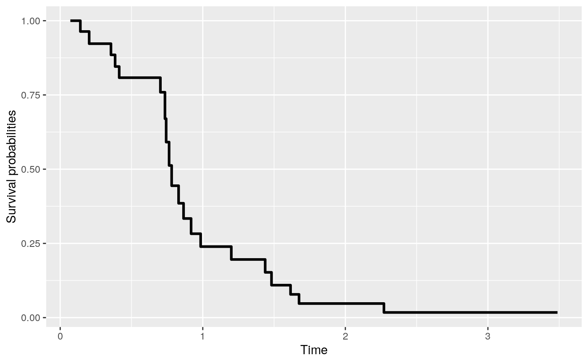
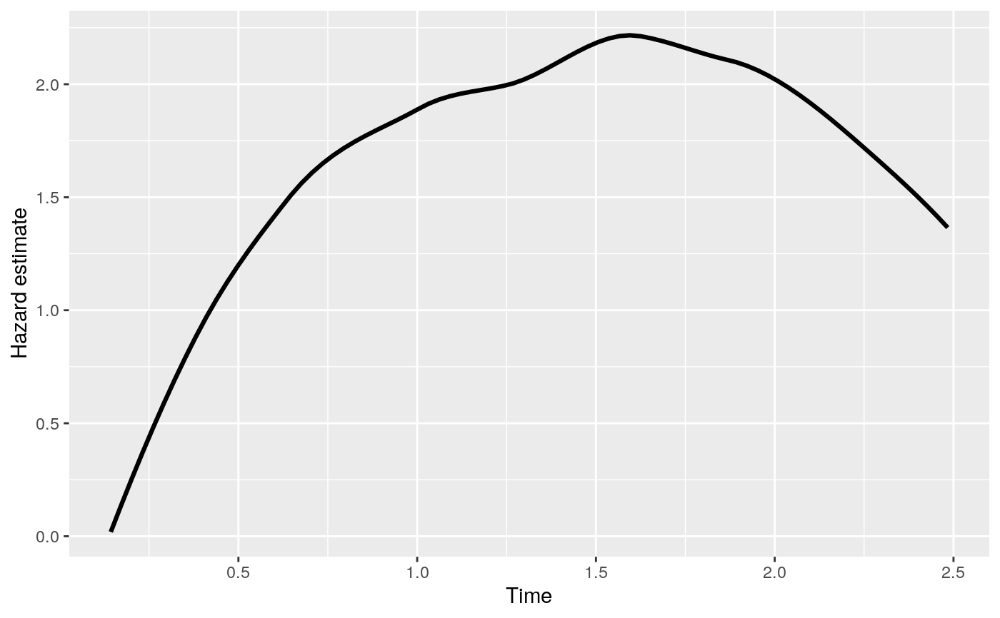

The function gives predicted values with a rocTree fit.
# S3 method for rocTree predict(object, newdata, type = c("survival", "hazard"), control = list(), ...)
| object | is an |
|---|---|
| newdata | is an optional data frame in which to look for variables with which to predict. If omitted, the fitted predictors are used. If the covariate observation time is not supplied, covariates will be treated as at baseline. |
| type | is an optional character string specifying whether to predict the survival probability or the cumulative hazard rate. |
| ... | for future developments. |
Returns a data.frame of the predicted survival probabilities or cumulative hazard.
library(rocTree) library(survival) set.seed(1) dat <- simu(100, 0, 1.3) fit <- rocTree(Surv(Time, death) ~ z1 + z2, id = id, data = dat, ensemble = FALSE) ## testing data newdat <- dplyr::tibble(Time = sort(unique(dat$Time)), z1 = 1 * (Time < median(Time)), z2 = runif(1)) newdat#> # A tibble: 100 x 3 #> Time z1 z2 #> <dbl> <dbl> <dbl> #> 1 0.0712 1 0.690 #> 2 0.0862 1 0.690 #> 3 0.119 1 0.690 #> 4 0.130 1 0.690 #> 5 0.141 1 0.690 #> 6 0.143 1 0.690 #> 7 0.151 1 0.690 #> 8 0.154 1 0.690 #> 9 0.157 1 0.690 #> 10 0.159 1 0.690 #> # … with 90 more rows